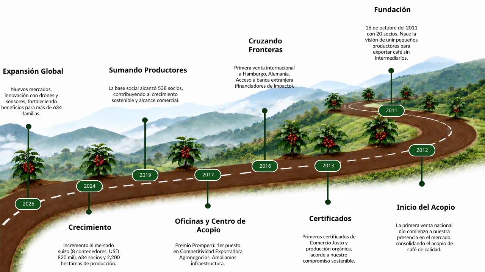
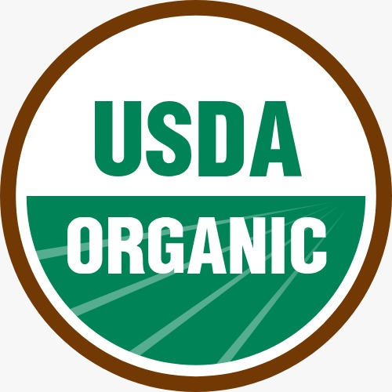
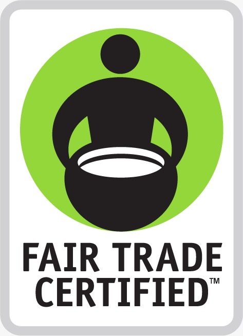
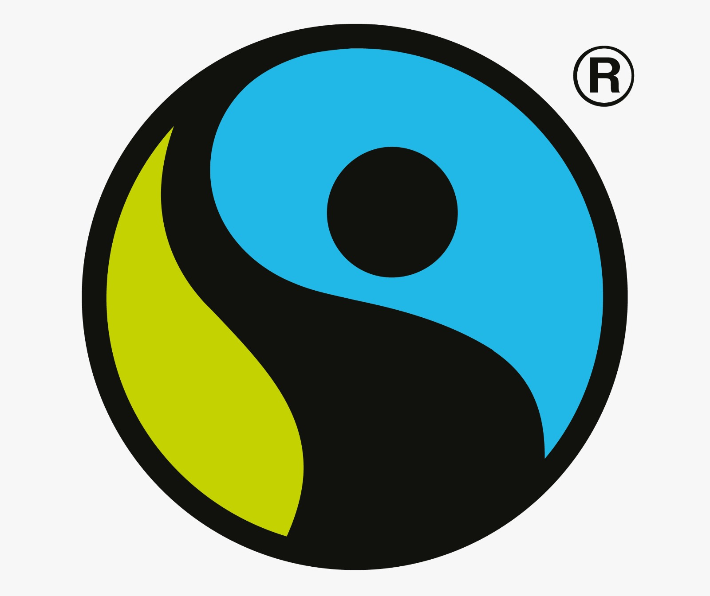
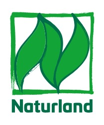
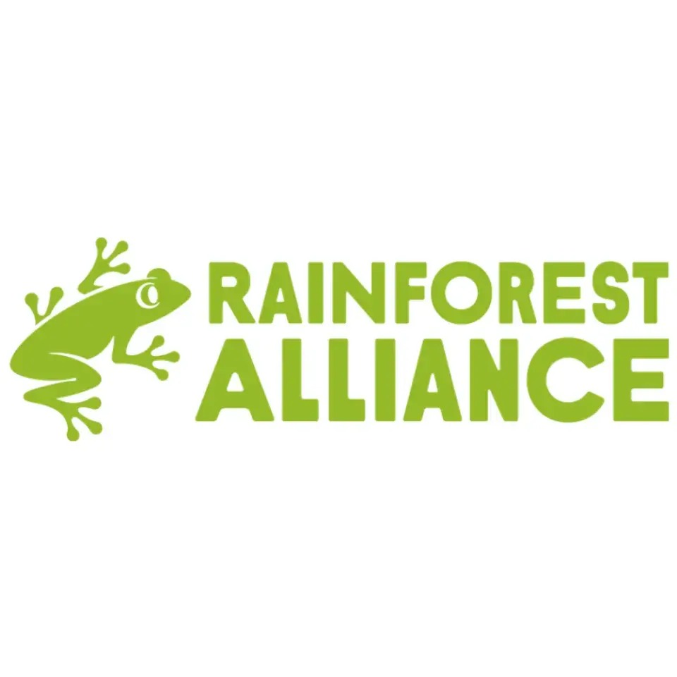
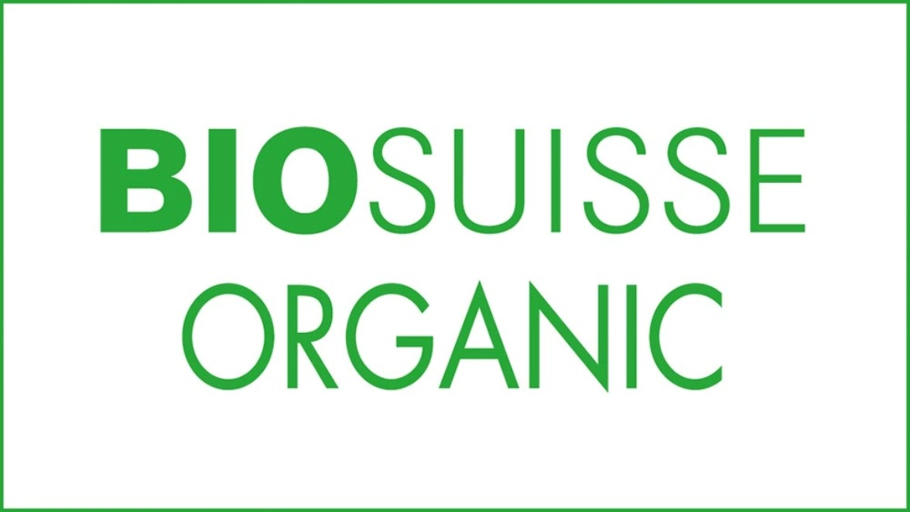

De pequeños productores a referentes del café peruano
Fundada en 2011 en Pichanaki, Junín, la Cooperativa Agraria Cafetalera Juan Santos Atahualpa nació de la visión de un grupo de 20 agricultores convencidos de que juntos podían lograr más. Hoy somos más de 671 socios distribuidos en los valles cafetaleros del Chanchamayo.
A lo largo de más de 15 años hemos construido relaciones comerciales directas con importadores en Alemania, Japón, Estados Unidos y otros destinos, eliminando intermediarios y garantizando precios justos para nuestros productores.
Nuestro compromiso con la calidad, la sostenibilidad y la innovación tecnológica nos ha permitido obtener certificaciones internacionales y convertirnos en un referente del café de especialidad peruano.

Misión, Visión y Valores
Los principios que guían cada decisión y cada cosecha de nuestra cooperativa.
Nuestra Misión
Ser una cooperativa sostenible y descentralizada, líder en la producción y exportación de cafés especiales, destacando por su trazabilidad, certificaciones y prácticas responsables que promuevan el desarrollo social y cultural de sus socios.
Nuestra Visión
Somos una cooperativa de productores de cafés de alta calidad con servicios de asistencia técnica y con una eficiente gestión orientada al desarrollo sostenible, elevando el nivel de vida socioeconómico y cultural.
Nuestros Valores
Promovemos la responsabilidad, transparencia, solidaridad, respeto, compromiso y trabajo en equipo, fortaleciendo la confianza entre nuestros socios y contribuyendo al desarrollo sostenible de nuestra cooperativa y comunidad.
Historia y Trayectoria
Desde 2011, cada paso ha construido el camino hacia un café peruano de excelencia global.

Nuestras Certificaciones
Estándares que avalan nuestro compromiso con la calidad, la sostenibilidad y el comercio justo.





